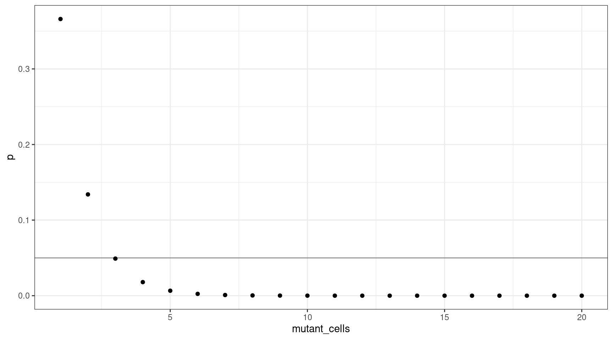
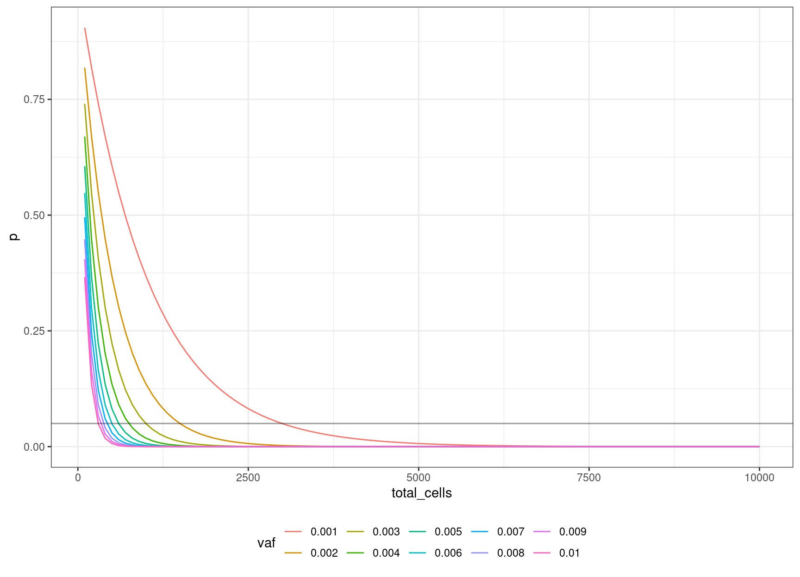

Last updated: 2022-05-31
Checks: 7 0
Knit directory: rare-mutation-detection/
This reproducible R Markdown analysis was created with workflowr (version 1.6.2). The Checks tab describes the reproducibility checks that were applied when the results were created. The Past versions tab lists the development history.
Great! Since the R Markdown file has been committed to the Git repository, you know the exact version of the code that produced these results.
Great job! The global environment was empty. Objects defined in the global environment can affect the analysis in your R Markdown file in unknown ways. For reproduciblity it’s best to always run the code in an empty environment.
The command set.seed(20210916) was run prior to running the code in the R Markdown file. Setting a seed ensures that any results that rely on randomness, e.g. subsampling or permutations, are reproducible.
Great job! Recording the operating system, R version, and package versions is critical for reproducibility.
Nice! There were no cached chunks for this analysis, so you can be confident that you successfully produced the results during this run.
Great job! Using relative paths to the files within your workflowr project makes it easier to run your code on other machines.
Great! You are using Git for version control. Tracking code development and connecting the code version to the results is critical for reproducibility.
The results in this page were generated with repository version e722dc0. See the Past versions tab to see a history of the changes made to the R Markdown and HTML files.
Note that you need to be careful to ensure that all relevant files for the analysis have been committed to Git prior to generating the results (you can use wflow_publish or wflow_git_commit). workflowr only checks the R Markdown file, but you know if there are other scripts or data files that it depends on. Below is the status of the Git repository when the results were generated:
Ignored files:
Ignored: .DS_Store
Ignored: .Rapp.history
Ignored: .Rhistory
Ignored: .Rproj.user/
Ignored: analysis/.DS_Store
Ignored: scripts/
Untracked files:
Untracked: ._.DS_Store
Untracked: DOCNAME
Untracked: analysis/._.DS_Store
Untracked: analysis/cache/
Untracked: analysis/calc_nanoseq_metrics.Rmd
Untracked: data/._metrics.rds
Untracked: data/ecoli/
Untracked: data/metadata/
Untracked: data/metrics_efficiency_nossc.rds
Untracked: data/mixtures
Untracked: data/ref/
Untracked: prototype_code/
Note that any generated files, e.g. HTML, png, CSS, etc., are not included in this status report because it is ok for generated content to have uncommitted changes.
These are the previous versions of the repository in which changes were made to the R Markdown (analysis/model.Rmd) and HTML (docs/model.html) files. If you’ve configured a remote Git repository (see ?wflow_git_remote), click on the hyperlinks in the table below to view the files as they were in that past version.
| File | Version | Author | Date | Message |
|---|---|---|---|---|
| Rmd | e722dc0 | Marek Cmero | 2022-05-31 | Fix typo, minor code update |
| html | b524238 | Marek Cmero | 2022-05-26 | Build site. |
| Rmd | afd79e5 | Marek Cmero | 2022-05-26 | Added revised model, in silico mixtures redone with 1 supporting read, added input cell estimates |
| html | 0b0a0dd | Marek Cmero | 2022-05-12 | Build site. |
| Rmd | 3c84b8f | Marek Cmero | 2022-05-12 | update model for haploid genome |
| html | 0e46464 | Marek Cmero | 2022-04-11 | Build site. |
| Rmd | f5ca0c0 | Marek Cmero | 2022-04-11 | added mixture experiment calculation |
| html | cde303e | Marek Cmero | 2022-02-17 | Build site. |
| Rmd | 7cfe3e4 | Marek Cmero | 2022-02-17 | Updated/simplified model |
| html | e5ed9a7 | Marek Cmero | 2021-12-15 | Build site. |
| html | 5a3c6b1 | Marek Cmero | 2021-12-15 | Build site. |
| html | cbb4886 | mcmero | 2021-09-22 | Build site. |
| Rmd | cf87608 | mcmero | 2021-09-22 | Added equation |
| Rmd | 5cb4f4d | mcmero | 2021-09-22 | Fix probability of selecting mutant fragment |
| html | 5cb4f4d | mcmero | 2021-09-22 | Fix probability of selecting mutant fragment |
| html | 2f677c2 | mcmero | 2021-09-22 | Build site. |
| Rmd | de62c5c | mcmero | 2021-09-22 |
|
| html | de62c5c | mcmero | 2021-09-22 |
|
| html | b680ba0 | mcmero | 2021-09-17 | Build site. |
| Rmd | ebb9d74 | mcmero | 2021-09-17 | initial commit |
| html | ebb9d74 | mcmero | 2021-09-17 | initial commit |
library(ggplot2)Q: how many cells (or “cell equivalents”) do we need to sequence to detect variants down to a VAF of X%
The probability of selecting a cell with a given variant from a pool of \(n\) cells is the variant allele frequency (VAF) \(v\). This indicates that a VAF of 0.01 means 1 cell in 100 is a mutant (\(nv\)).
We assume the probability of selecting a mutant cell is binomially distributed. We want to know the probability of selecting at least one mutant:
\(P(Bin(n, v)) > 0)\) = 0.95
This is equivalent to:
\(P(Bin(n, v)) = 0)\) = 0.05
Where \(n\) is the number of sequenced cells.
Let’s consider how many input cells (\(n\)) are required to select at least one mutant cell at 1% VAF (95% confidence).
We’ll consider 100 cell increments from \(n = \{100, 200..2000\}\). Using these values, we can plot the probability selecting of sequencing at least one cell.
v = 0.01
n = seq(100, 2000, 100)
vafs <- data.frame(vaf=v,
p=pbinom(0, n, v),
input_cells=n,
mutant_cells=(n * v))
ggplot(vafs, aes(input_cells, p)) +
geom_point() +
theme_bw() +
geom_hline(yintercept=0.05, alpha=0.4)
We can also plot this as mutant cells instead of VAF:
ggplot(vafs, aes(mutant_cells, p)) +
geom_point() +
theme_bw() +
geom_hline(yintercept=0.05, alpha=0.4)
This shows that for a VAF target of 1%, we should sequence at least 300 cells (3 are mutants).
deviation <- abs(0.05 - vafs$p)
print(vafs[which(deviation == min(deviation)),]) vaf p input_cells mutant_cells
3 0.01 0.04904089 300 3If we select 1000 input cells, what’s the lowest VAF we can sequence down to, where \(v = {0.0002, 0.0004..0.01}\).
v = seq(0.0002, 0.01, 0.0002)
n = 1000
vafs <- data.frame(vaf=v,
p=pbinom(0, n, v),
input_cells=n,
mutant_cells=(n * v))
ggplot(vafs, aes(vaf, p)) +
geom_point() +
theme_bw() +
geom_hline(yintercept=0.05, alpha=0.4)
We can sequence down to approx 0.3% VAF.
deviation <- abs(0.05 - vafs$p)
print(vafs[which(deviation == min(deviation)),]) vaf p input_cells mutant_cells
15 0.003 0.04956308 1000 3We can look at the relationship between input cells and allele frequency:
cells_vs_vaf = NULL
n = seq(100, 10000, 100)
V = seq(0.001, 0.01, 0.001)
for (v in V) {
toadd <- data.frame(
vaf=as.factor(v),
p=pbinom(0, n, v),
total_cells=n
)
cells_vs_vaf <- rbind(cells_vs_vaf, toadd)
}
ggplot(cells_vs_vaf, aes(total_cells, p, colour=vaf)) +
geom_line() +
theme_bw() +
theme(legend.position = 'bottom') +
geom_hline(yintercept=0.05, alpha=0.4)
We can define an equation based on the binomial probability calculation, of obtaining the number of cells to sequence, to be 95% confident of sequencing the mutation based on the target VAF:
\((1 – v) ^ n = 0.05\)
The above thought experiment won’t tell us the probability of sequencing the variant, as sequencing involves a whole host of other factors. Coverage is one of the most important. Given that approximately 30x raw coverage is required to yield 1x of high quality duplex coverage, we can look at the relationship between coverage and VAF (need the variant to be at least 1x to detect).
Here we can see that at VAF = 0.01 (line), we need to sequence to approx 3000x, and this gets exponentially deeper as we go down in target VAF.
v = seq(0.001, 0.1, 0.001)
ccov <- data.frame(d = 30 / v,
v = v)
ggplot(ccov, aes(d, v)) +
geom_line() +
theme_bw() +
geom_hline(yintercept=0.01, alpha=0.4)
| Version | Author | Date |
|---|---|---|
| cde303e | Marek Cmero | 2022-02-17 |
How much total coverage will we need, in order to detect a mixture of \(X\%?\) We define this as successfully calling at least 50% of the variants at VAF \(v = \{0.1, 0.01, 0.001\}\) with at least one supporting duplex read. We assume our duplex yield is 30 (i.e., 30x coverage yields 1x duplex coverage).
Our binomial calculation takes the form of:
\(P(Bin(n, v)) = 0)\) = 0.5 where \(n =\) duplex coverage.
df <- NULL
min_reads <- 1
duplex_yield <- 30
duplex_seq_range <- seq(1, 10000, 1)
fraction_we_can_miss <- 0.5
for(vaf in c(0.1, 0.01, 0.001)) {
tmp <- data.frame(
pval=pbinom(min_reads - 1, duplex_seq_range, vaf),
vaf=vaf,
duplex_cov=duplex_seq_range,
total_cov=duplex_seq_range * duplex_yield
)
tmp <- tmp[tmp$pval < fraction_we_can_miss,]
tmp <- tmp[tmp$pval == max(tmp$pval),]
df <- rbind(df, tmp)
}
print(df) pval vaf duplex_cov total_cov
7 0.4782969 0.100 7 210
69 0.4998370 0.010 69 2070
693 0.4999002 0.001 693 20790Attempting to combine both coverage and cell input, we can take the following formula:
\((1 - v) ^ {(n * c * d)} = p\)
Where \(v\) = target VAF, \(n\) = number of input cells, \(c\) = coverage per input cell, \(d\) = duplex efficiency and \(p\) = probability of missing a variant.
We set:
We also need to check whether the number of genome equivalents we take forward for sequencing exceeds the lane capacity (600GB). Our sequenced bases will be:
\(b = g * c * n\) where \(g\) = genome size.
lane_cap <- 6e11
g <- 5e6
pmiss <- 0.05
c <- 10
e <- 0.057
vafs <- c(0.001, 0.01, 0.05, 0.1)
n <- seq(100, 10000, 100)
# calculate duplex coverage
dcov <- n * c * e
# calculate total sequenced bases
bases <- g * c * n
probs <- NULL
min_cells <- NULL
for(vaf in vafs) {
prob <- data.frame(ncells = n,
dcov = dcov,
p = pbinom(0, dcov, vaf),
vaf = vaf,
bases = bases,
within_capacity = bases < lane_cap)
tmp <- prob[prob$p < pmiss,]
tmp <- tmp[tmp$p == max(tmp$p),]
min_cells <- rbind(tmp, min_cells)
probs <- rbind(probs, prob)
}
print(min_cells) ncells dcov p vaf bases within_capacity
1 100 57 0.002465035 0.100 5.00e+09 TRUE
2 200 114 0.002887294 0.050 1.00e+10 TRUE
6 600 342 0.032154114 0.010 3.00e+10 TRUE
53 5300 3021 0.048678808 0.001 2.65e+11 TRUEggplot(probs, aes(ncells, p, colour = factor(vaf))) +
geom_point() +
theme_minimal() +
geom_hline(yintercept = pmiss, alpha=0.4) +
scale_color_brewer(palette = 'Dark2')
| Version | Author | Date |
|---|---|---|
| b524238 | Marek Cmero | 2022-05-26 |
sessionInfo()R version 4.0.5 (2021-03-31)
Platform: x86_64-pc-linux-gnu (64-bit)
Running under: CentOS Linux 7 (Core)
Matrix products: default
BLAS: /stornext/System/data/apps/R/R-4.0.5/lib64/R/lib/libRblas.so
LAPACK: /stornext/System/data/apps/R/R-4.0.5/lib64/R/lib/libRlapack.so
locale:
[1] LC_CTYPE=en_US.UTF-8 LC_NUMERIC=C
[3] LC_TIME=en_US.UTF-8 LC_COLLATE=en_US.UTF-8
[5] LC_MONETARY=en_US.UTF-8 LC_MESSAGES=en_US.UTF-8
[7] LC_PAPER=en_US.UTF-8 LC_NAME=C
[9] LC_ADDRESS=C LC_TELEPHONE=C
[11] LC_MEASUREMENT=en_US.UTF-8 LC_IDENTIFICATION=C
attached base packages:
[1] stats graphics grDevices utils datasets methods base
other attached packages:
[1] ggplot2_3.3.5 workflowr_1.6.2
loaded via a namespace (and not attached):
[1] Rcpp_1.0.7 RColorBrewer_1.1-2 highr_0.9 pillar_1.6.4
[5] compiler_4.0.5 bslib_0.3.0 later_1.3.0 jquerylib_0.1.4
[9] git2r_0.28.0 tools_4.0.5 digest_0.6.27 jsonlite_1.7.2
[13] evaluate_0.14 lifecycle_1.0.1 tibble_3.1.5 gtable_0.3.0
[17] pkgconfig_2.0.3 rlang_0.4.12 DBI_1.1.1 yaml_2.2.1
[21] xfun_0.22 fastmap_1.1.0 withr_2.4.2 dplyr_1.0.7
[25] stringr_1.4.0 knitr_1.33 generics_0.1.1 fs_1.5.0
[29] vctrs_0.3.8 sass_0.4.0 tidyselect_1.1.1 rprojroot_2.0.2
[33] grid_4.0.5 glue_1.4.2 R6_2.5.1 fansi_0.5.0
[37] rmarkdown_2.11 farver_2.1.0 purrr_0.3.4 magrittr_2.0.1
[41] whisker_0.4 scales_1.1.1 promises_1.2.0.1 ellipsis_0.3.2
[45] htmltools_0.5.2 assertthat_0.2.1 colorspace_2.0-0 httpuv_1.6.3
[49] labeling_0.4.2 utf8_1.2.2 stringi_1.7.5 munsell_0.5.0
[53] crayon_1.4.2